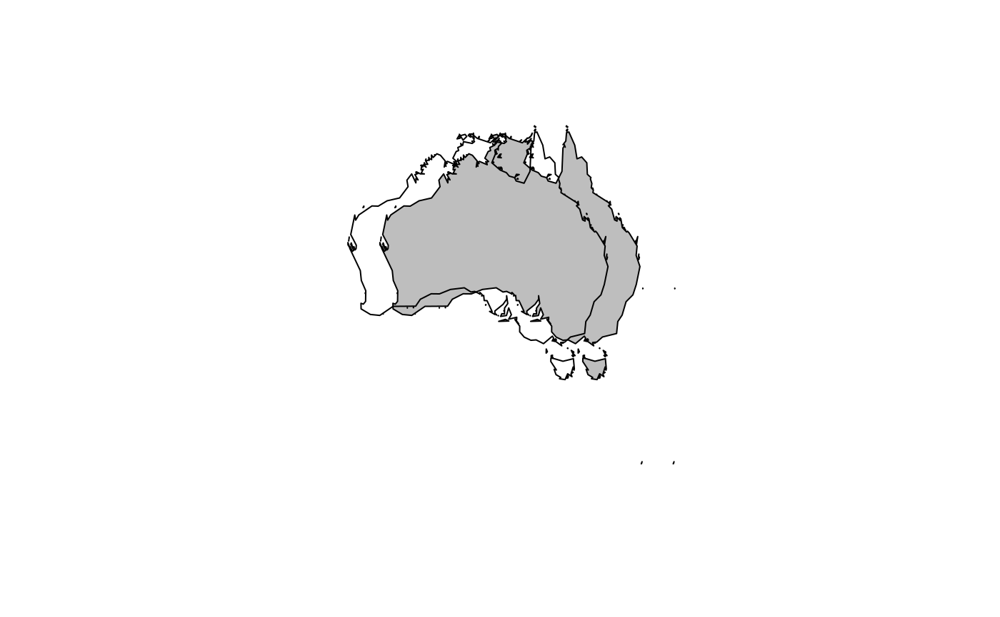
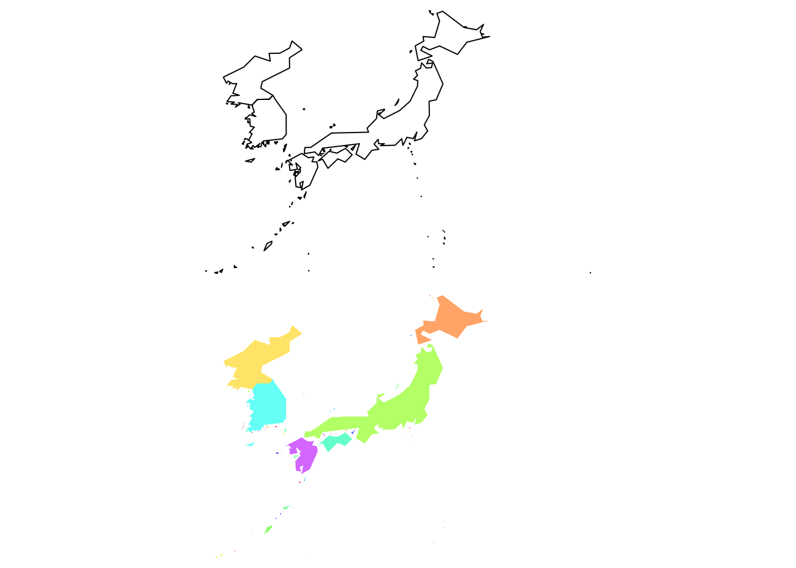
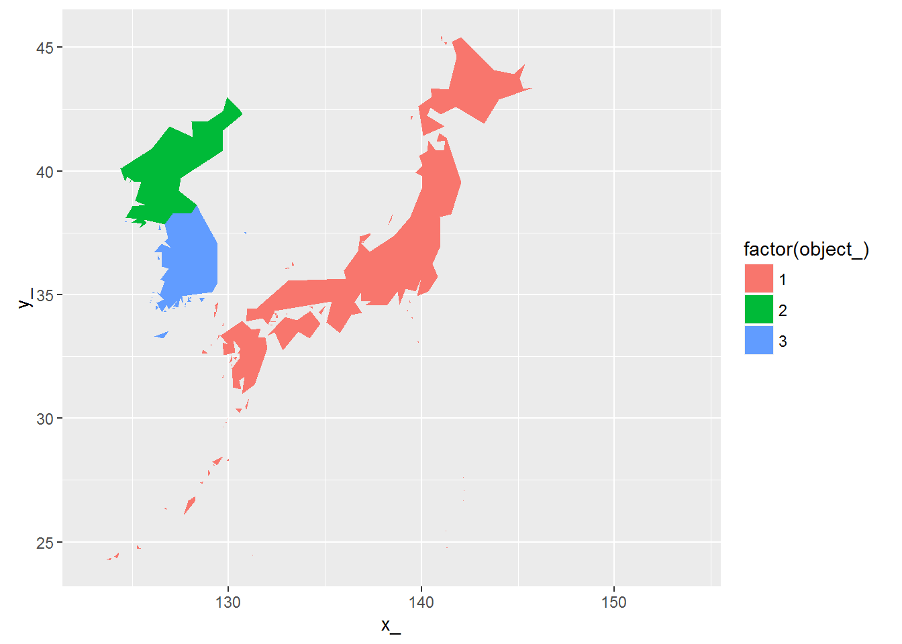
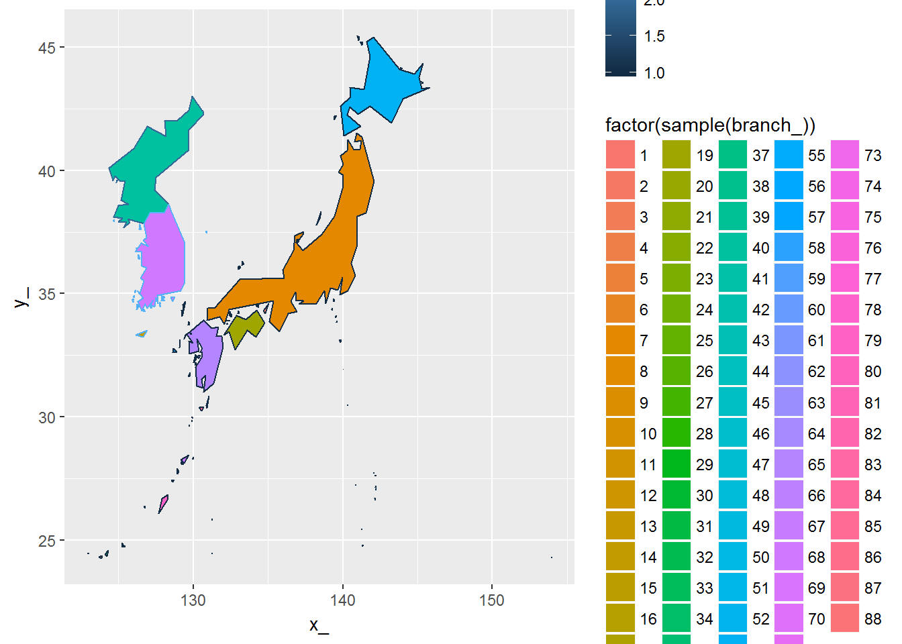
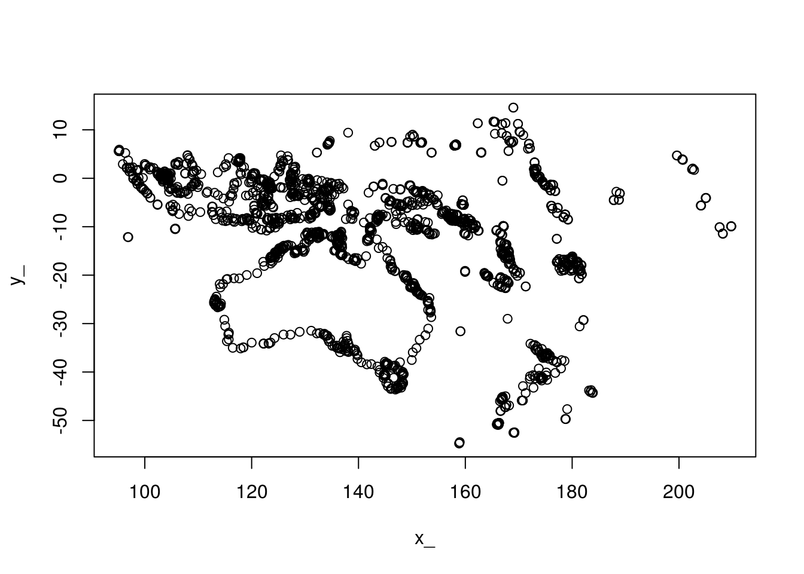
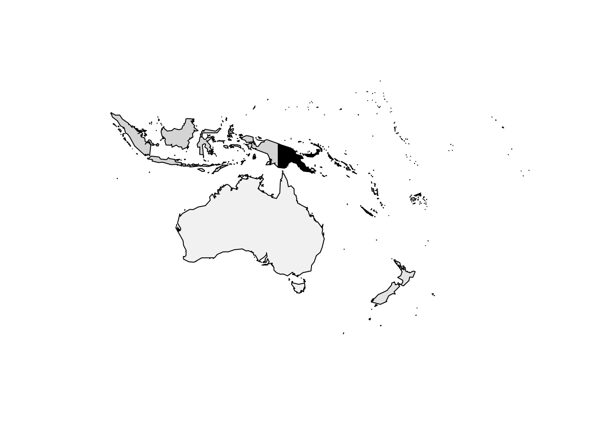
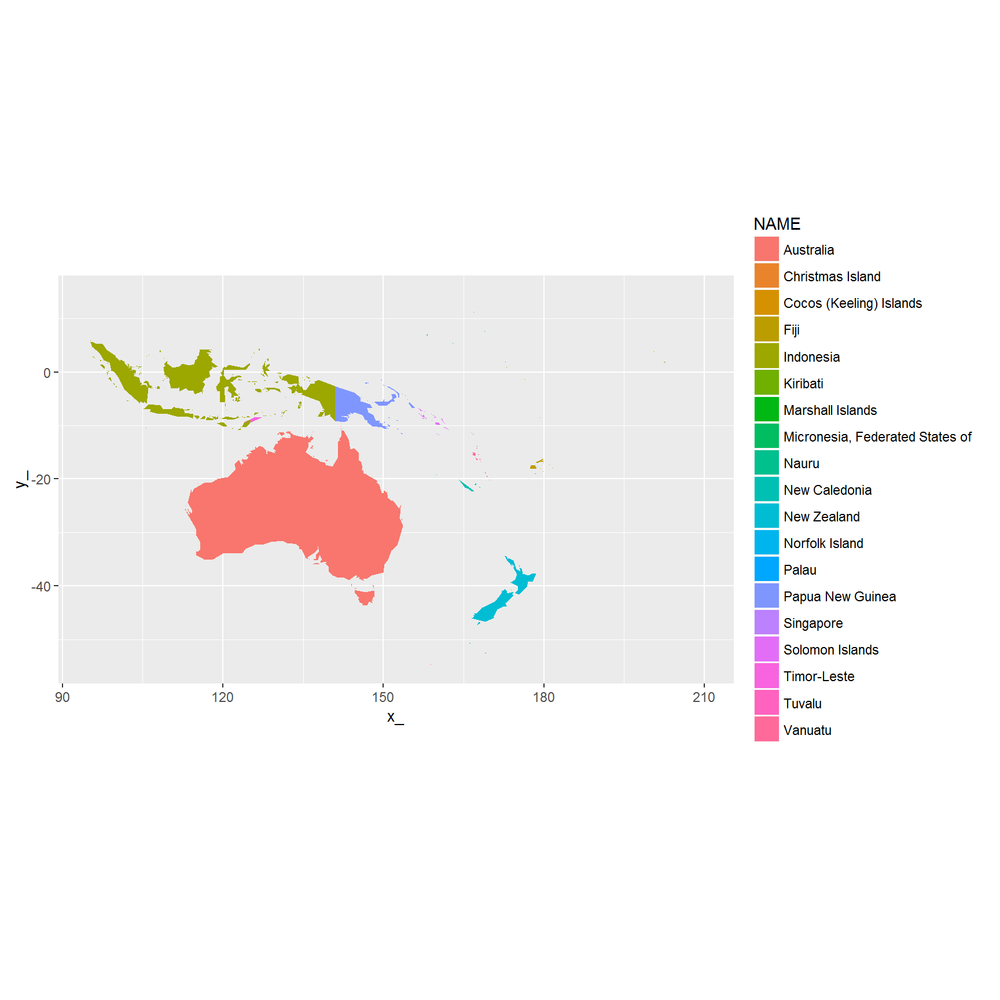

Spbabel provides simple tools to flip between Spatial and tidy forms of data. This package aims to assist in the ongoing development of tools for spatial data in R.
Spatial data in the sp package have a formal definition (extending class Spatial) that is modelled on shapefiles, and close at least in spirit to the Simple Features definition. See What is Spatial in R? for more details.
Turning these data into long-form tables has been likened to making fish soup, which has a nice nod to the universal translator babelfish.
The spbabel package tries to help by providing a more systematic encoding into the long-form with consistent naming and lossless ways to re-compose the original (or somewhat modified) objects.
There are two main forms.
The two-table version is similar to that implemented in:
as() coercion for SpatialLinesDataFrame to SpatialPointsDataFramegeom()fortify()The four-table form is in development across a number of projects. It is straightforward to work with but there aren’t any high-level tools in package form yet.
The long-form single table of all coordinates, with object, branch, island-status, and order provides a reasonable middle-ground for transferring between different representations of Spatial data. Tables are always based on the “tibble” since it’s a much better data frame.
The sptable function creates the table of coordinates with identifiers for object and branch, which is understood by sptable<- to “fortify” and sp for the reverse.
The long-form table may seem like soup, but it’s not meant to be seen for normal use. It’s very easy to dump this to databases, or to ask spatial databases for this form. There are other more normalized multi-table approaches as well - this is just a powerful lowest common denominator.
We can tidy this up by encoding the geometry data into a geometry-column, into nested data frames, or by normalizing to tables that store only one kind of data, or with recursive data structures such as lists of matrices. Each of these has strengths and weaknesses. Ultimately I want this to evolve into a fully-fledged set of tools for representing spatial/topological data in R, but still by leveraging existing code whereever possible.
The sptable function decomposes a Spatial object to a single table structured as a row for every coordinate in all the sub-geometries, including duplicated coordinates that close polygonal rings, close lines and shared vertices between objects.
The sp function re-composes a Spatial object from a table, it auto-detects the topology by the matching column names:
The sp function could include overrides to avoid these tests but it’s so easy to modify a table to have the matches for the required topology it hardly seems worth it.
Use the sptable<- replacement method to modify the underlying geometric attributes (here x and y is assumed no matter what coordinate system).
library(maptools)
data(wrld_simpl)
library(spbabel)
(oz <- subset(wrld_simpl, NAME == "Australia"))## class : SpatialPolygonsDataFrame
## features : 1
## extent : 112.9511, 159.1019, -54.74973, -10.05167 (xmin, xmax, ymin, ymax)
## coord. ref. : +proj=longlat +ellps=WGS84 +datum=WGS84 +no_defs +towgs84=0,0,0
## variables : 11
## # A tibble: 1 × 11
## FIPS ISO2 ISO3 UN NAME AREA POP2005 REGION SUBREGION
## * <fctr> <fctr> <fctr> <int> <fctr> <int> <dbl> <int> <int>
## 1 AS AU AUS 36 Australia 768230 20310208 9 53
## # ... with 2 more variables: LON <dbl>, LAT <dbl>## long-form encoding of objects
oztab <- sptable(oz)
## make a copy to modify
woz <- oz
library(dplyr)
## modify the geometry on this object without separating the vertices from the objects
sptable(woz) <- sptable(woz) %>% mutate(x_ = x_ - 5)
# plot to compare
plot(oz, col = "grey")
plot(woz, add = TRUE)
We can also restructure objects, by mutating the value of object to be the same as “branch” we get individual objects from each.
pp <- sptable(wrld_simpl %>% subset(NAME == "Japan" | grepl("Korea", NAME)))
## explode (or "disaggregate"") objects to individual polygons
## here each branch becomes an object, and each object only has one branch
## (ignoring hole-vs-island status for now)
wone <- sp(pp %>% mutate(object_ = branch_), crs = attr(pp, "crs"))
op <- par(mfrow = c(2, 1), mar = rep(0, 4))
plot(sp(pp), col = grey(seq(0.3, 0.7, length = length(unique(pp$object)))))## Warning: Unknown column 'object'plot(wone, col = sample(rainbow(nrow(wone), alpha = 0.6)), border = NA)
par(op)The long-form table is also ready for ggplot2:
library(ggplot2)
ggplot(pp) + aes(x = x_, y = y_, fill = factor(object_), group = branch_) + geom_polygon()
## resample the branch_ IDs to mix up the colours so that
## object disaggregation is more apparent
set.seed(10)
ggplot(pp) + aes(x = x_, y = y_, fill = factor(sample(branch_)), group = branch_, col = object_) + geom_polygon()
Please note that that geom_polygon cannot handle islands with multiple holes, and it only can do one hole by pretending it is a closed path and hides the boundary so you don’t see the sleight of hand. See the package ‘ggpolypath’ for a ‘geom_polypath’ geom.
For the four-table for de-duplication is performed in “x”/“y” by default, but the technique is general and could be applied to a geometric space of any dimension. Duplicates are identified by coercing numeric values to character (after ‘base::duplicated’) and so is not robust to numeric issues. We haven’t found any problems yet.
An example of working with the four table form.
codes <- c("AUS", "SLB", "FJI", "FSM", "KIR",
"NCL", "NFK", "CCK", "CXR", "VUT", "NRU", "PNG",
"SGP", "TUV", "IDN", "TLS", "PLW", "MHL", "NZL")
mm <- map_table(wrld_simpl %>% subset(ISO3 %in% codes))
## cross the dateline properly
mm$v <- mm$v %>% mutate(x_ = ifelse(x_ < 0, x_ + 360, x_))
plot(mm$v[, c("x_", "y_")])
## get an sp object
## cascaded inner join and arrange within branch
ctable <- with(mm,
inner_join(v, bXv) %>% inner_join(b) %>%
arrange(branch_, order_) %>% select(-vertex_))## Joining, by = "vertex_"## Joining, by = "branch_"mm_sp <- sp(ctable,
attr_tab = mm$o)
mm_sp## class : SpatialPolygonsDataFrame
## features : 19
## extent : 95.00803, 209.7808, -54.74973, 14.59805 (xmin, xmax, ymin, ymax)
## coord. ref. : NA
## variables : 12
## # A tibble: 19 × 12
## FIPS ISO2 ISO3 UN NAME AREA
## <fctr> <fctr> <fctr> <int> <fctr> <int>
## 1 AS AU AUS 36 Australia 768230
## 2 BP SB SLB 90 Solomon Islands 2799
## 3 FJ FJ FJI 242 Fiji 1827
## 4 FM FM FSM 583 Micronesia, Federated States of 70
## 5 KR KI KIR 296 Kiribati 73
## 6 NC NC NCL 540 New Caledonia 1828
## 7 NF NF NFK 574 Norfolk Island 0
## 8 CK CC CCK 166 Cocos (Keeling) Islands 1
## 9 KT CX CXR 162 Christmas Island 0
## 10 NH VU VUT 548 Vanuatu 1219
## 11 NR NR NRU 520 Nauru 2
## 12 NZ NZ NZL 554 New Zealand 26799
## 13 PP PG PNG 598 Papua New Guinea 45286
## 14 SN SG SGP 702 Singapore 67
## 15 TV TV TUV 798 Tuvalu 3
## 16 ID ID IDN 360 Indonesia 181157
## 17 TT TL TLS 626 Timor-Leste 1487
## 18 PS PW PLW 585 Palau 0
## 19 RM MH MHL 584 Marshall Islands 0
## # ... with 6 more variables: POP2005 <dbl>, REGION <int>, SUBREGION <int>,
## # LON <dbl>, LAT <dbl>, object_ <chr>plot(mm_sp, col = grey(seq(0, 1, length = nrow(mm_sp))))
## get a gg plot
ggplot(ctable %>% inner_join(select(mm$o, NAME, object_))) +
aes(x = x_, y = y_, group = branch_, fill = NAME) +
geom_polygon() + ggplot2::coord_equal()## Joining, by = "object_"